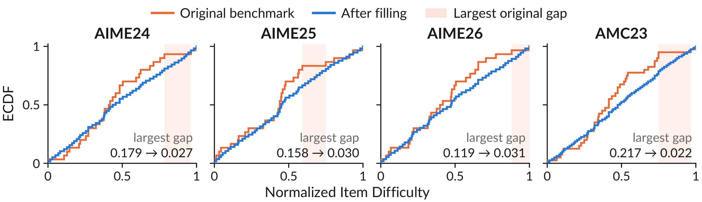

(a) Measure mismatch
Keep the models fixed. Move the benchmark distribution toward the target and compare the resulting score gaps.
Model AModel B
EasierHarder
Benchmark scores
Target scores
Benchmark gap vs. target gap
1University of Illinois Urbana-Champaign 2University of California San Diego 3New York University
*Equal contribution · Correspondence: Yifan Sun and Huan Zhang
Our analysis of 25 widely used benchmarks reveals two widespread problems:
Interactive intuition
Keep the models fixed. Move the benchmark distribution toward the target and compare the resulting score gaps.
Move a local improvement along the difficulty axis. A coverage gap can hide it from the benchmark.
Illustrative simulation, not experimental results. Curves and item locations are synthetic; every displayed score is computed from them. The target in (a) stays fixed. In (b), uniform-difficulty gain averages the improvement over [0, 1].
We formulate a benchmark as an empirical measure over item difficulty: each question contributes equal mass at its difficulty level. This formulation exposes two fundamental problems.
Measure Mismatch
A benchmark’s empirical difficulty distribution may differ from the intended evaluation distribution, potentially distorting model comparisons.
Coverage Gaps
Uncovered intervals along the difficulty axis can prevent benchmarks from detecting meaningful localized model improvements.
Benchmark measure
We represent a benchmark \(B\) as an empirical measure over difficulty. Each of its \(n\) items contributes equal mass \(1/n\) at its difficulty \(z_i\in[0,1]\).
Model performance
The expected performance of model \(\theta\) on items of difficulty \(z\), such as pass@1.
Benchmark score
The usual average score is an integral against the benchmark measure.
Model performance difference
The difference between two models at the same difficulty.
Benchmark score difference
The observed model gap depends on both the models and the benchmark's difficulty distribution.
Difficulty Distribution Mismatch
Here, \(\mu\) is the target distribution over difficulty, specifying the intended evaluation objective.
The 1-Wasserstein distance measures how much mass must be moved, and how far, to turn the benchmark's difficulty distribution into the target one.
The target model difference is \(D_\mu(\theta',\theta)=\int\Delta(z)\,d\mu(z)\).
Maximum Gap
The length of the largest interval on the difficulty axis that contains no benchmark item, counting the intervals next to 0 and 1 (\(z_{(0)}:=0\), \(z_{(n+1)}:=1\)).
Theorem 2.1Distribution mismatch controls score distortion and rank stability
If the performance difference \(\Delta\) is \(L\)-Lipschitz, then
Consequently, if \(|D_\mu(\theta',\theta)|>L\,W_1(\nu_B,\mu)\), then \(\operatorname{sign}D_B(\theta',\theta)=\operatorname{sign}D_\mu(\theta',\theta)\): no rank flip can occur.
A small DDM keeps benchmark comparisons faithful to the target distribution.
Theorem 2.3Maximum gap as an exact asymptotic minimax detection boundary
Let \(s^-,s^+\) be the pre- and post-improvement performance curves. Fix \(\alpha\in(0,1)\) and \(a\in(0,1]\), and test \(H_0: s^-=s^+\) against \(H_1\): \(s^+(z)-s^-(z)\ge a\) for all \(z\) in some interval \(I\subset[0,1]\) with \(|I|=w\). Let \(\Pi^*_\alpha(B;w,a,k)\) be the minimax worst-case power of level-\(\alpha\) tests based on \(k\) repeated samples per item.
An improvement no wider than the maximum gap can be invisible in the worst case, however many times the benchmark is re-run.
We analyze 25 widely used benchmarks spanning math, coding, agentic tasks, science, instruction following, logic, and medicine. We estimate item difficulties using Item Response Theory (IRT).
![Figure 2. Pipeline in four panels: (1) collect a response matrix of empirical success rates of N LLMs on M items with k rollouts per item; (2) diagnose the response matrix with model and item information and inversion rates; (3) fit a 1PL IRT model P(Y_ij = 1) = sigma(theta_j - b_i) and check R-hat, minimum bulk ESS, divergent transitions, and leave-one-out stability; (4) compute the Wasserstein distance between the benchmark and uniform ECDFs and the maximum gap between sorted normalized difficulties.](./static/images/fig2_pipeline.png)
25
benchmarks across 7 domains
10/25
have DDM ≥ 0.10
8/25
have Max Gap ≥ 0.10
9/25
have Top-5 Gap Sum ≥ 0.30
Pick a benchmark to see the ECDF of its normalized item difficulties against the same-size uniform reference. The area between the two curves equals DDM, and the green bands mark the five largest adjacent gaps.
| Benchmark | DDM | Max Gap | Top-5 Sum | # |
|---|
Several benchmarks deviate strongly from the neutral uniform target. Their aggregate scores are more sensitive to over-represented difficulty regions and less sensitive to under-represented ones. High-DDM leaderboard results reflect the benchmark's own difficulty weighting rather than a difficulty-neutral comparison, so users should check whether that weighting matches their use case.
Many benchmarks have large local coverage gaps. A training run may make meaningful progress inside an uncovered region while the aggregate score barely moves. AIME24 and AIME25, for example, have Top-5 Gap Sums close to 0.5 despite their widespread use for monitoring RLVR training. This can cause useful training progress to be underestimated, promising runs to be prematurely discarded, and compute to be misallocated.
Diagnosis suggests an action: put new items where the benchmark has none. For an adjacent gap \([z_L,z_R]\) between two benchmark items, the goal is a valid new item whose difficulty is as close as possible to the midpoint \(z^\star=(z_L+z_R)/2\). The new item is added to the benchmark and replaces nothing. Rather than writing items from scratch, an LLM rewrites existing items, which serve as local difficulty references and keep the benchmark’s format and style.
![Figure 4. Gap-filling overview. 1. Rewrite: an LLM rewrites each parent item, a dice-product counting problem, into several child variants. 2. Annotate: each child goes through (a) a validity check, (b) response collection, and (c) online calibration to obtain an item difficulty. 3. Update memory: annotated items are added to a memory along the difficulty axis; the parents closest to the target difficulty inside the gap become rewriting seeds, and nearby lower and higher items form a reference list for the next round.](./static/images/fig4_benchfill.png)
Select relevant parent items and generate difficulty-targeted variants using the target difficulty and nearby reference items.
Check candidate validity, collect model responses, and estimate the generated items’ difficulties through online IRT calibration.
Add annotated items to memory so subsequent generations can use better parents and difficulty references.
We release gap-filled versions of AIME24, AIME25, AIME26, and AMC23. Each dataset preserves the original benchmark questions and adds curated questions to improve difficulty coverage.

| Benchmark | Original | Generated | Final |
|---|---|---|---|
| AIME24 | 30 | 20 | 50 |
| AIME25 | 30 | 22 | 52 |
| AIME26 | 30 | 23 | 53 |
| AMC23 | 40 | 40 | 80 |
Download BenchFill Datasets on Hugging Face or data/filled_benchs on GitHub.
Each pair shows an original benchmark item (the ancestor) and the final item selected from its lineage, with the main change highlighted. Difficulties are normalized to [0,1], and the target is in parentheses. Rewrites can move difficulty in either direction.
Original ancestor 0.535
For how many integers \(n\) does the expression \(\displaystyle\sqrt{\frac{\log(n^2)-(\log n)^2}{\log n-\htmlClass{hl}{3}}}\) represent a real number, where \(\log\) denotes the base-10 logarithm?
Generated item 0.597 (0.598)
Find the number of integer values of \(n\) such that \(\displaystyle\sqrt{\frac{\log(n^2)-(\log n)^2}{\log n-\htmlClass{hl}{1}}}\) represents a real number, where \(\log\) denotes the base-10 logarithm.
Original ancestor 0.864
On an \(8\times8\) chessboard, 6 black rooks and \(k\) white rooks are placed on different cells so that each rook only attacks rooks of the opposite color. Compute the maximum possible value of \(k\). (Two rooks attack each other if they are in the same row or column and no rooks are between them.)
Generated item 0.886 (0.885)
On a \(9\times9\) chessboard, 7 black rooks and \(k\) white rooks are placed on distinct squares so that each rook attacks only rooks of the opposite color. What is the maximum possible value of \(k\)? (Two rooks attack each other if they are in the same row or column and there is no rook between them.)
Original ancestor 0.750
Alex divides a disk into four quadrants with two perpendicular diameters intersecting at the center of the disk. He draws 25 more line segments through the disk, each connecting two points at random on the perimeter in different quadrants. Find the expected number of regions into which these 27 line segments divide the disk.
Generated item 0.674 (0.671)
A circle has a diameter drawn, splitting it into two semicircular regions. Then 8 chords are drawn, each connecting a random point on the boundary in one semicircle to a random point on the boundary in the other semicircle. Assuming all points are chosen uniformly and independently, what is the expected number of regions into which the interior of the circle is divided?
@misc{sun2026benchmark,
title = {Your Benchmark Is an Empirical Measure Over Difficulty},
author = {Sun, Yifan and Yu, Naicheng and Gong, Jiawen and Shen, Jingyan and Zhang, Huan},
year = {2026},
note = {Preprint}
}
Preprint citation. It will be updated with arXiv metadata once available.